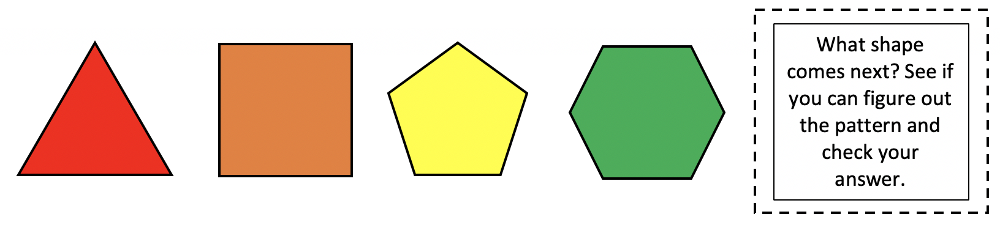
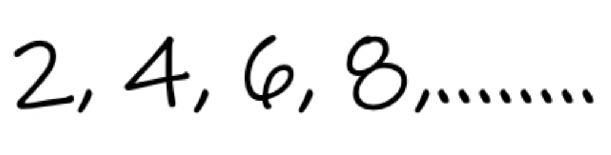

Locating patterns is a crucial part of your every-day life. Finding patterns if one is present, is a skill that you will use your whole life and not typically all math-related. There are infinite patterns that exist all around the world.
While the patterns you see in life may be a bit more complex, here we introduce the concept of locating, or "finding" a pattern that exists in either pictures, shapes, or numbers. Real-life patterns are much more broad-scoped for our lesson. We will see how patterns work none-the-less.
Looking at the pattern, select the correct answer.

Looking at the pattern, select the correct answer.
Looking at the pattern, select the correct answer.

Rule:
When looking for the next stage in a pattern, you must compare and contrast each stage to the one before and after it.
This will help you determine the pattern. It's all about "what changed" at each stage, and if it were to continue, what picture, letter, or number comes next. That's all there is to it!